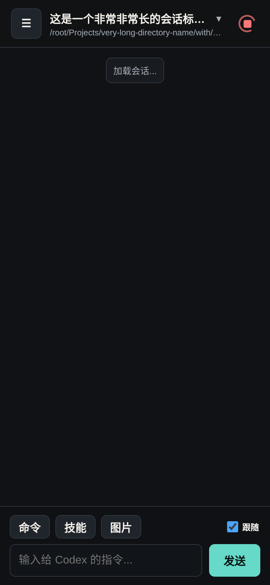
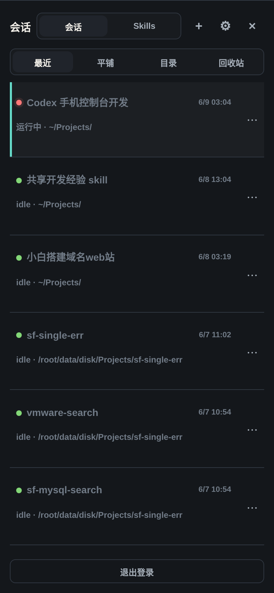
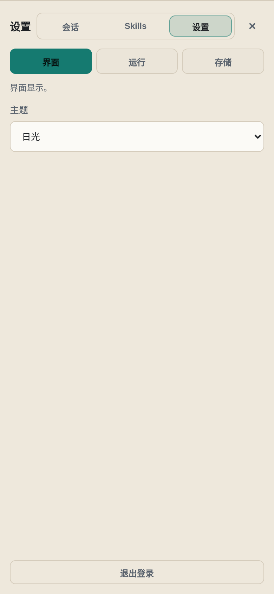

Self-hosted Codex control
Codex Mobile Console
手机接管服务器里的 Codex 会话。看进度、补指令、切项目、停任务，不再靠移动 SSH 硬撑。
curl -fsSL https://raw.githubusercontent.com/twotwo7/codex-mobile-console/main/scripts/install.sh | bash

Designed for remote AI development
Codex 继续在服务器上跑，手机只是控制面板。
01
保持会话
终端断开不影响服务器上的 Codex 任务。
02
随时补充
手机打开 PWA，继续发送需求或排队下一条指令。
03
看见运行时
查看进程、状态、缓存和运行中的任务。

Private by design
适合 VPS、NAS、家用小主机和远程开发机。
默认绑定 127.0.0.1，建议放在 HTTPS、VPN、Tailscale 或 Cloudflare Access 后面。它不是公开 SaaS，而是你的个人 Codex 控制台。